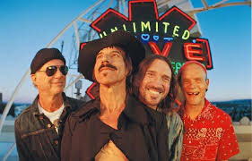

Red Hot Chili Peppers

Sobre a Banda
- O Red Hot Chili Peppers é uma banda de rock alternativo originária de Los Angeles, Califórnia, formada em 1983. A banda é conhecida por sua mistura única de funk, punk rock e elementos de rock alternativo em sua música, bem como suas performances enérgicas ao vivo. Os memb
ros fundadores da banda foram o vocalista Anthony Kiedis, o guitarrista Hillel Slovak, o baixista Flea (Michael Balzary) e o baterista Jack Irons. O estilo musical do Red Hot Chili Peppers é fortemente influenciado pelo funk, especialmente pela banda de funk Parliament-Fun-
kadelic. Ao longo dos anos, a banda passou por várias mudanças na formação, mas Flea e Anthony Kiedis permaneceram como membros constantes. Um dos álbuns mais influentes da banda foi "Blood Sugar Sex Magik", lançado em 1991, que incluiu hits como "Under the Bridge" e "Give
It Away". Este álbum catapultou a banda para o sucesso mainstream e solidificou sua reputação como uma das principais bandas de rock da época. Outros álbuns de destaque incluem "Californication" (1999), "By the Way" (2002), "Stadium Arcadium" (2006) e "I'm with You" (2011).
Cada um desses álbuns demonstra a habilidade da banda em evoluir musicalmente enquanto mantém sua identidade única. Além de sua música, o Red Hot Chili Peppers é conhecido por sua personalidade excêntrica e estilo de vida hedonista, especialmente durante os primeiros anos
de sua carreira. No entanto, ao longo do tempo, os membros da banda também se tornaram conhecidos por sua dedicação à sobriedade e à filantropia. No geral, o Red Hot Chili Peppers é uma banda icônica que deixou uma marca indelével na história do rock, influenciando gerações
de músicos e fãs com sua energia contagiante e sua mistura única de gêneros musicais.
Álbuns em ordem de lançamento:
- "The Red Hot Chili Peppers" (1984)
- "Freaky Styley" (1985)
- "The Uplift Mofo Party Plan" (1987)
- "Mother's Milk" (1989)
- "Blood Sugar Sex Magik" (1991)
- "One Hot Minute" (1995)
- "Californication" (1999)
- "By the Way" (2002)
- "Stadium Arcadium" (2006)
- "I'm with You" (2011)
- "The Getaway" (2016)
- "Unlimited Love" (2022)
- "The Return Of The Dream Canteen" (2023)
Formação atual:
- Anthony Kiedis - Vocalista (desde 1983).
- Flea (Michael Balzary) - Baixo (desde 1983).
- Chad Smith - Bateria (desde 1988).
- John Frusciante - Guitarra (membro anteriormente de 1988 a 1992 e de 1998 a 2009, retornou em 2019).
Prêmios que o RHCP já levaram para casa:
- Grammy Awards.
- MTV Awards.
- American Music Awards.
- Billboard Music Awards.
- Rock And Roll Hall Of Fame.